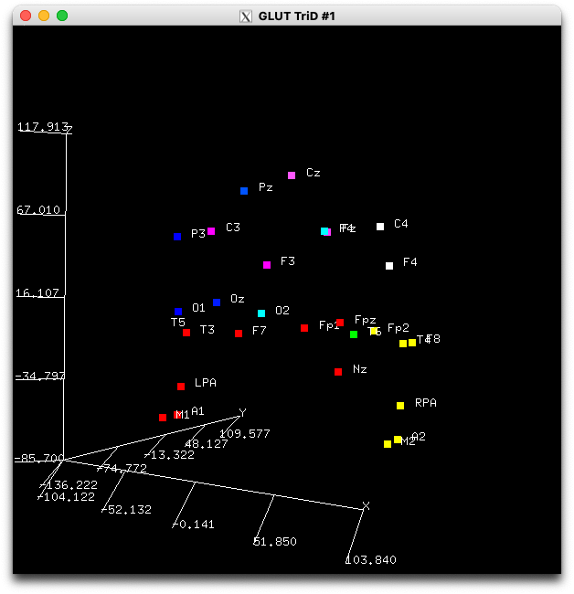

Day 12: 3D visualization of scalp electrode sites can be done with Perl

Seeing is believing. A better presentation can more easily persuade people with your story. I, working as an EEG (electroencephalography) researcher, sometimes need to consider the location of its origin, referring to the electrode positions used while recording the data. This is because the scalp distribution of the recorded EEG potential (amplitude) can be affected by how the electrodes align with each other. Here I need to better visualize 3D locations of electrode positions.
Let’s try visualization of those electrode positions using Perl, in 3D manner, where you can change the camera position to watch them from your favorite angle/direction!
I took three steps to realize such a visualization. The first one is to parse the electrode position file, the second to construct its contents in the way I want to call/name, connecting its contents to the way I would prefer to reuse/call. The third is the actual visualization, using the PDL::Graphics::TriD module.
Step 0 - Preparation
These are the needed modules to be installed:
- PDL
- PDL::Graphics::TriD
My environment FYI: MacOS Ventura 13.4, Xcode 14.3.1, MacPorts 2.10.5
Step 1 - Parsing
The first step is parsing the file to make a 2D array using the subroutine parse_ASCII.
I wrote that subroutine myself. Yes, this is kind of “re-inventing the wheel”. There are so many shorter and smarter modules you can find on CPAN! Anyway in many cases, I would re-use values returned by my subroutine, later in my script.
use strict;
use warnings;
use PDL;
use PDL::NiceSlice;
use PDL::Graphics::TriD;
use PDL::Graphics::TriD::Labels;
our $verbose = 1;
sub parse_ASCII {
my ($filein) = @_;
if (!-s $filein) { die("$filein is empty, quits \n"); }
open my $fh, "<", $filein or die "Cannot open: $filein for input at parse_ASCII$!";
print "reading ASCII input:$filein...\t" if $verbose;
my ($nl, $lgth, @out2D) = (0,0);
while (<$fh>) {
my @tmp = split(/\s+/);
$nl++;
$lgth = @tmp if @tmp > $lgth;
push @out2D, \@tmp;
}
print "Done!\n" if $verbose;
($lgth, $nl, \@out2D);
}
Step 2 - Make a table
Next, construct an accessible table using the subroutine parse_ELEC_POS3D_ASA_4AdventCalendar.
The input file has xyz coordinates of each electrode in the upper half of the file, and labels (electrode names) in the lower part of the file.
So I need to connect/associate the labels to the corresponding coordinates. This kind of job is one of the Perl’s strongest suits (^^).
And we can build very flexible data structure in one construct, like a combination of dictionaries (a hash in Perl terminology) and numerical arrays.
my ($r_h, $r_pos, $labels, $x, $y, $z) = parse_ELEC_POS3D_ASA_4AdventCalendar($ARGV[0]);
print " ... processed $r_h->{FileComment} \n" if $verbose;
sub parse_ELEC_POS3D_ASA_4AdventCalendar
{ # ASA electrode file provided by mne_python e.g., https://github.com/mne-tools/mne-python/blob/main/mne/channels/data/montages/standard_1020.elc
my ($r_start) = @_;
my ($lgth, $nl, $r) = parse_ASCII($r_start);
my @in = @$r;
my (@epos, @labels, %h);
$h{total_nl} = $nl;
$h{filename} = $r_start;
$h{N_header} = 4;
$h{N_Coords} = ($nl - $h{N_header} - 2) / 2;
$h{FileComment} = join(" ", @{ $in[0] });
$h{ReferenceLabel} = $in[1][1];
$h{UnitPosition} = $in[2][1];
$h{NumberPositions} = $in[3][1];
print "Parsing $nl lines with $h{NumberPositions} locations ... " if $verbose;
for my $i (0..$nl) { $h{Labels_loc} = $i if ($in[$i][0]//'') eq "Labels"; }
$h{start_label} = $h{Labels_loc} + 1;
$h{start_cord} = $h{N_header} + 1;
for my $i ($h{start_label}..$nl-1) {
$epos[$i - $h{start_label}]{name} = $in[$i][0];
}
for my $i ($h{start_cord}..$h{Labels_loc}-1) {
@{$epos[$i - $h{start_cord}]}{qw(x y z)} = @{$in[$i]};
}
for my $i (0..$h{NumberPositions}-1) {
$h{ $epos[$i]{name} }{DeviceCh} = $i;
@{ $h{ $epos[$i]{name} } }{qw(x y z)} = @{ $epos[$i] }{qw(x y z)};
}
warn "\n Oops, make sure $h{NumberPositions} ne $h{N_Coords} ... \n"
if $h{NumberPositions} ne $h{N_Coords};
my $coords = zeroes(float, 3, $h{NumberPositions});
for my $i (0..$h{NumberPositions}-1) {
$coords(,$i) .= pdl(map $_ || 0, @{$epos[$i]}{qw(x y z)});
$labels[$i] = " " . "$epos[$i]{name}";
}
print "Done!\n" if $verbose;
return (\%h, \@epos, \@labels, $coords->using(0,1,2));
}
Step 3 - Add color
Finally in the subroutine disp_3d, define the colors and draw the positions in 3D!
Now the time to define colors of each electrode. In this report, the color is defined by its coordinates, and of course you can use EEG voltage if you want. Then call the actual visualization of the 3D window.
There should appear one window with small square tiles, corresponding to each electrode position. You can drag and change the rotation of the “helmet” like point-clouds!
If you click on the window and press q on your keyboard, the second figure will appear with electrode name labels.
These labels also move around with each corresponding tile (electrode) while you drag the “helmet”!
{kind=link}
disp_3d($labels, $x, $y, $z);
sub disp_3d {
my ($labels, $x, $y, $z) = @_;
points3d([ $x, $y, $z ], [ $y + 50, $x, $z ], { PointSize => 8 });
hold3d();
PDL::Graphics::TriD::graph_object(my $lab
= PDL::Graphics::TriD::Labels->new([ $x, $y, $z ], { Strings => $labels }));
}

Putting it all together
How to execute the above 3 steps?
Place the electrode position file classic10_20.elc and the Perl script file PerlAdventCalendar2024Dec.Shugo.pl in the same directory on your machine. You need to open up a terminal.app, and move to that directory where the above two files are located. Then type
$ perl PerlAdventCalendar2024Dec.Shugo.pl classic10_20.elc
Now you will see a X window with 3D locations you decoded. Have fun with dragging the “helmet”!

Next step(s)
It will be possible to make voltage mapping figures projected on the scalp hopefully!
References
- Shugo Suwazono, Hiroshi Arao. A newly developed free software tool set for averaging electroencephalogram implemented in the Perl programming language. Heliyon. 2020;6(11):e05580. doi: 10.1016/j.heliyon.2020.e05580. PMID: 33294707 PMCID: PMC7701343
EEG Recording Cap by Chris Hope is licensed under CC BY 2.0 and did not originate from the author's research.

Shugo Suwazono MD, PhD.
Shugo Suwazono started writing Perl modules for matrix operations in 1999 and has reached version 1.9.23. A 2020 Pubmed article describing EEG processing with Perl was realized with eeg.pm version 2.2.4.85 consisting of 13353 loc.